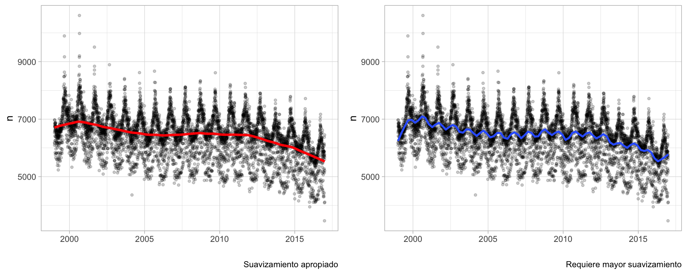

library(tidyverse)
library(lubridate)
library(kableExtra)
nacimientos <- read_rds("datos/nacimientos/natalidad.rds") |>
ungroup() |>
filter(year(fecha) == 2016, month(fecha) <= 3)1 Análisis exploratorio
“Exploratory data analysis can never be the whole story, but nothing else can serve as the foundation stone –as the first step.” — John Tukey
Muchas veces se le llama análisis exploratorio a una combinación de resúmenes, gráficas y tablas cuyos propósitos pueden englobarse en:
Validación de datos. Verificar si en los datos existen o no valores imposibles o “extraños” para algunas mediciones, si existen datos faltantes, o existen otros posibles “defectos”, irregularidades o sorpresas.
Mostrar estadísticas descriptivas. Mostrar algunas resúmenes útiles y compactos de las mediciones que tenemos: cuáles son valores o rangos de valores comunes, cuáles son los extremos de las mediciones y así sucesivamente.
Análisis exploratorio. Buscamos gráficas o resúmenes que muestren patrones más importantes y sustanciales, como la relación entre distintas partes de los datos, qué partes de la variación en los datos son tentativamente atribuibles a ciertos factores y qué partes no.
Esta fase del análisis de datos es fundamental, como la cita de Tukey explica arriba, y se caracteríza por un enfoque de detective: quizá tenemos algunas preguntas, algunas sospechas, y en esta fase acumulamos indicios que nos indiquen caminos prometedores de investigación.
En contraste, tenemos el análisis confirmatorio, que busca validar hipótesis o dar respuestas correctamente cuantificadas en cuanto a su incertidumbre o grado de error. En esta parte somos más jueces que detectives, y utilizamos más maquinaria matemática (teoría de probabilidad) para especificar con claridad nuestros supuestos y poder hacer cálculos cuidadosos, generalmente basados en algún tipo de aleatorización.
Ninguno de los dos tipos de análisis funciona muy bien sin el otro, (Tukey (1980)) y explicaremos por qué un poco más adelante. Por el momento, para ilustrar el enfoque exploratorio, comenzaremos con datos que podemos describir de manera completa y efectiva sin necesidad de hacer resúmenes o aplicar técnicas avanzadas.
1.1 Ejemplo: nacimientos
Consideremos una parte de los datos de nacimientos por día del INEGI de 1999 a 2016. Consideraremos sólo tres meses: enero a marzo de 2016. Estos datos, por su tamaño, pueden representarse de manera razonablemente efectiva en una visualización de serie de tiempo
Examinamos partes del contenido de la tabla:
tab_1 <- nacimientos |>
select(fecha, n) |>
slice_head(n = 5)
tab_2 <- nacimientos |>
select(fecha, n) |>
slice_tail(n = 5)
kable(list(tab_1, tab_2)) |> kable_styling()
|
|
En un examen rápido de estos números no vemos nada fuera de orden. Los datos tienen forma de serie de tiempo regularmente espaciada (un dato para cada día). Podemos graficar de manera simple como sigue:
ggplot(nacimientos, aes(x = fecha, y = n)) +
geom_point() +
geom_line() +
scale_x_date(breaks = "1 week", date_labels = "%d-%b") Esta es una descripción de los datos, que quizá no es muy compacta pero muestra varios aspectos importantes. En este caso notamos algunos patrones que saltan a la vista. Podemos marcar los domingos de cada semana:
domingos_tbl <- nacimientos |>
filter(weekdays(fecha) == "domingo")
ggplot(nacimientos, aes(x = fecha, y = n)) +
geom_vline(aes(xintercept = fecha), domingos_tbl, colour = "salmon") +
geom_point() +
geom_line() +
scale_x_date(breaks = "1 week", date_labels = "%d-%b") Observamos que los domingos ocurren menos nacimientos y los sábados también ocurren relativamente menos nacimentos. ¿Por qué crees que sea esto?
Adicionalmente a estos patrones observamos otros aspectos interesantes:
- El primero de enero hay considerablemente menos nacimientos de los que esperaríamos para un viernes. ¿Por qué?
- El primero de marzo hay un exceso de nacimientos considerable. ¿Qué tiene de especial este primero de marzo?
- ¿Cómo describirías lo que sucede en la semana que comienza el 21 de marzo? ¿Por qué crees que pase eso?
- ¿Cuáles son los domingos con más nacimientos? ¿Qué tienen de especial y qué explicación puede tener?
La confirmación de estas hipótesis, dependiendo de su forma, puede ser relativamente simple (por ejemplo ver una serie más larga de domingos comparados con otros días de la semana) hasta muy compleja (investigar preferencias de madres, de doctores o de hospitales, costumbres y actitudes, procesos en el registro civil, etc.)
Procesos generadores de datos
De este primer ejemplo donde usamos una gráfica simple:
El proceso generador de datos
Nótese que en todas estas preguntas hemos tenido que recurrir a conocimientos generales y de dominio para interpretar y hacer hipótesis acerca de lo que vemos en la gráfica. Una visión descontextualizada no tiene mucha utilidad. Las explicaciones son típicamente complejas e intervienen distintos aspectos del comportamiento de actores, sistemas, y métodos de recolección de datos involucrados. Al conjunto de esos aspectos que determinan los datos que finalmente observamos le llamamos el proceso generador de datos.
El análisis de datos en general busca entender las partes importantes del proceso que los generó. En el análisis descriptivo y exploratorio buscamos iluminar ese proceso, proponer hipótesis y buscar caminos interesantes para investigar, ya sea con técnicas cuantitativas o con trabajo de campo (como sugiere el título de artículo de David A. Friedman: Statistical Models and Shoe Leather).
Con la teoría de probabilidades podemos modelar más explícitamente partes de estos procesos generadores de datos, especialmente cuando controlamos parte de ese proceso generador mediante técnicas estadísticas de diseño, por ejemplo, usando aleatorización.
Ejemplo (cálculos renales)
En este ejemplo también intentaremos mostrar los datos completos sin intentar resumir.
Este es un estudio real acerca de tratamientos para cálculos renales (Julious y Mullee (1994)). Pacientes se asignaron de una forma no controlada a dos tipos de tratamientos para reducir cálculos renales. Para cada paciente, conocemos el el tipo de ćalculos que tenía (grandes o chicos) y si el tratamiento tuvo éxito o no.
La tabla original se ve como sigue (muestreamos algunos renglones):
calculos <- read_csv("./datos/kidney_stone_data.csv")
names(calculos) <- c("tratamiento", "tamaño", "éxito")
calculos <- calculos |>
mutate(tamaño = ifelse(tamaño == "large", "grandes", "chicos")) |>
mutate(resultado = ifelse(éxito == 1, "mejora", "sin_mejora")) |>
select(tratamiento, tamaño, resultado)
nrow(calculos)[1] 700calculos |>
sample_n(20) |>
kable()| tratamiento | tamaño | resultado |
|---|---|---|
| B | chicos | mejora |
| A | chicos | mejora |
| A | grandes | mejora |
| B | chicos | mejora |
| B | chicos | mejora |
| A | chicos | mejora |
| A | grandes | mejora |
| B | chicos | mejora |
| A | grandes | sin_mejora |
| B | chicos | mejora |
| A | grandes | mejora |
| A | grandes | mejora |
| B | chicos | mejora |
| B | chicos | mejora |
| A | grandes | mejora |
| A | grandes | mejora |
| A | grandes | sin_mejora |
| B | grandes | mejora |
| A | grandes | mejora |
| B | chicos | mejora |
Aunque estos datos contienen información de 700 pacientes (cada renglón es un paciente), los datos pueden resumirse sin pérdida de información contando como sigue:
calculos_agregada <- calculos |>
group_by(tratamiento, tamaño, resultado) |>
count()
calculos_agregada |> kable()| tratamiento | tamaño | resultado | n |
|---|---|---|---|
| A | chicos | mejora | 81 |
| A | chicos | sin_mejora | 6 |
| A | grandes | mejora | 192 |
| A | grandes | sin_mejora | 71 |
| B | chicos | mejora | 234 |
| B | chicos | sin_mejora | 36 |
| B | grandes | mejora | 55 |
| B | grandes | sin_mejora | 25 |
Este resumen no es muy informativo, pero al menos vemos qué valores aparecen en cada columna de la tabla. Como en este caso nos interesa principalmente la tasa de éxito de cada tratamiento, podemos mejorar mostrando como sigue:
calculos_agregada |> pivot_wider(names_from = resultado, values_from = n) |>
mutate(total = mejora + sin_mejora) |>
mutate(prop_mejora = round(mejora / total, 2)) |>
select(tratamiento, tamaño, total, prop_mejora) |>
arrange(tamaño) |>
kable()| tratamiento | tamaño | total | prop_mejora |
|---|---|---|---|
| A | chicos | 87 | 0.93 |
| B | chicos | 270 | 0.87 |
| A | grandes | 263 | 0.73 |
| B | grandes | 80 | 0.69 |
Esta tabla descriptiva es una reescritura de los datos, y no hemos resumido nada todavía. Sin embargo, esta tabla es apropiada para empezar a contestar la pregunta:
- ¿Qué indican estos datos acerca de qué tratamiento es mejor? ¿Acerca del tamaño de cálculos grandes o chicos?
Supongamos que otro analista decide comparar los pacientes que recibieron cada tratamiento, ignorando la variable de tamaño:
calculos |> group_by(tratamiento) |>
summarise(prop_mejora = mean(resultado == "mejora") |> round(2)) |>
kable()| tratamiento | prop_mejora |
|---|---|
| A | 0.78 |
| B | 0.83 |
y parece ser que el tratamiento \(B\) es mejor que el \(A\). Esta es una paradoja (un ejemplo de la paradoja de Simpson) . Si un médico no sabe que tipo de cálculos tiene el paciente, ¿entonces debería recetar \(B\)? ¿Si sabe debería recetar \(A\)? Esta discusión parece no tener mucho sentido.
Podemos investigar por qué está pasando esto considerando la siguiente tabla, que solo examina cómo se asignó el tratamiento dependiendo del tipo de cálculos de cada paciente:
calculos |> group_by(tratamiento, tamaño) |> count() |>
kable()| tratamiento | tamaño | n |
|---|---|---|
| A | chicos | 87 |
| A | grandes | 263 |
| B | chicos | 270 |
| B | grandes | 80 |
Nuestra hipótesis aquí es que la decisión de qué tratamiento usar depende del tamaño de los cálculos. En este caso, por alguna razón se prefiere utilizar el tratamiento \(A\) para cálculos grandes, y \(B\) para cálculos chicos. Esto quiere decir que en la tabla total el tratamiento \(A\) está en desventaja porque se usa en casos más difíciles, pero el tratamiento \(A\) parece ser en general mejor.
Igual que en el ejemplo anterior, los resúmenes descriptivos están acompañados de hipótesis acerca del proceso generador de datos, y esto ilumina lo que estamos observando y nos guía hacia descripciones provechosas de los datos. Las explicaciones no son tan simples y, otra vez, interviene el comportamiento de doctores, tratamientos, y distintos tipos de padecimientos.
Ejemplo
Ahora supongamos que tenemos datos de un tratamiento para mejorar enfermedades de corazón. En el estudio también se mide si la presión del paciente es alta o baja. Supongamos otra vez que tenemos dos tratamientos, A y B, y obtenemos los siguientes resultados:
corazon <- calculos |> rename(presión = tamaño) |>
mutate(presión = recode(presión, chicos = "baja", grandes = "alta"))| tratamiento | presión | total | prop_mejora |
|---|---|---|---|
| A | alta | 263 | 0.73 |
| B | alta | 80 | 0.69 |
| A | baja | 87 | 0.93 |
| B | baja | 270 | 0.87 |
corazon |> group_by(tratamiento) |>
summarise(prop_mejora = mean(resultado == "mejora") |> round(2)) |>
kable()| tratamiento | prop_mejora |
|---|---|
| A | 0.78 |
| B | 0.83 |
- En este ejemplo, ¿cuál es el análisis más apropiado? ¿Qué cosas necesitarías saber para tomar una decisión?
- ¿En qué es diferente o similar al caso de los cálculos renales?
1.2 Inferencia y predicción
En los ejemplos anteriores, sólo vimos muestras de datos (algunos pacientes, algunas fechas). Nuestras descripciones son, estrictamente hablando, válidas para esa muestra de los datos.
Si quisiéramos generalizar a la población de pacientes con cálculos (quizá en nuestra muestra el tratamiento A parece mejor, pero ¿qué podemos decir para la población de pacientes), o quisiéramos predecir cómo van a ser los nacimientos en 2021, requerimos otro tipo de análisis: inferencial y predictivo. Estos dos tipos de análisis, centrales en la estadística, buscan establecer condiciones para poder generalizar de nuestra muestra a datos no observados (otros pacientes, nacimientos en el futuro), y cuantificar qué tan bien o mal podemos hacerlo.
Para llegar a este tipo de análisis, generalmente tenemos que comenzar con el análisis exploratorio, y con la comprensión de los fundamentos del proceso generador asociado a nuestros datos. En algunos casos, veremos que es posible usar herramientas matemáticas para modelar aspectos de nuestro proceso generador de datos, que cuando válidas, nos permiten generalizar y ampliar apropiadamente el rango de nuestras conclusiones.
La herramienta básica para construir, entender y operar con estos modelos es la teoría de probabilidad, que veremos más adelante.
Ejercicio: admisiones de Berkeley
Consideramos ahora los siguientes datos de admisión a distintos departamentos de Berkeley en 1975:
data("UCBAdmissions")
adm_original <- UCBAdmissions |> as_tibble() |>
pivot_wider(names_from = Admit, values_from = n)
adm_original |> knitr::kable()| Gender | Dept | Admitted | Rejected |
|---|---|---|---|
| Male | A | 512 | 313 |
| Female | A | 89 | 19 |
| Male | B | 353 | 207 |
| Female | B | 17 | 8 |
| Male | C | 120 | 205 |
| Female | C | 202 | 391 |
| Male | D | 138 | 279 |
| Female | D | 131 | 244 |
| Male | E | 53 | 138 |
| Female | E | 94 | 299 |
| Male | F | 22 | 351 |
| Female | F | 24 | 317 |
Con algo de manipulación podemos ver tasas de admisión para Male y Female, y los totales de cada grupo que solicitaron en cada Departamento.
adm_tbl <- adm_original |>
mutate(prop_adm = round(Admitted / (Admitted + Rejected), 2), total = Admitted + Rejected) |>
select(Gender, Dept, prop_adm, total) |>
pivot_wider(names_from = Gender, values_from = prop_adm:total)
adm_tbl |> knitr::kable()| Dept | prop_adm_Male | prop_adm_Female | total_Male | total_Female |
|---|---|---|---|---|
| A | 0.62 | 0.82 | 825 | 108 |
| B | 0.63 | 0.68 | 560 | 25 |
| C | 0.37 | 0.34 | 325 | 593 |
| D | 0.33 | 0.35 | 417 | 375 |
| E | 0.28 | 0.24 | 191 | 393 |
| F | 0.06 | 0.07 | 373 | 341 |
Y complementamos con las tasas de aceptación a total por género, y tasas de aceptación por departamento:
adm_original |> group_by(Gender) |>
summarise(Admitted = sum(Admitted), Rejected = sum(Rejected)) |>
mutate(prop_adm = round(Admitted / (Admitted + Rejected),2)) |>
kable()| Gender | Admitted | Rejected | prop_adm |
|---|---|---|---|
| Female | 557 | 1278 | 0.30 |
| Male | 1198 | 1493 | 0.45 |
adm_original |> group_by(Dept) |>
summarise(Admitted = sum(Admitted), Rejected = sum(Rejected)) |>
mutate(prop_adm = round(Admitted / (Admitted + Rejected),2)) |>
kable()| Dept | Admitted | Rejected | prop_adm |
|---|---|---|---|
| A | 601 | 332 | 0.64 |
| B | 370 | 215 | 0.63 |
| C | 322 | 596 | 0.35 |
| D | 269 | 523 | 0.34 |
| E | 147 | 437 | 0.25 |
| F | 46 | 668 | 0.06 |
- ¿Qué observas acerca de las tasas de admisión en cada departamento, diferenciadas por género? ¿Qué tiene qué ver con el número de personas que solicitan en cada departamento?
- Esta es una tabla descriptiva. Sin embargo, tiene que ser entendida en el contexto de los datos y su generación. ¿Qué hipótesis importantes sugieren estos datos? ¿Por qué hay tanta diferencia de género de solicitudes en algunos departamentos? ¿Por qué es sorprendente o no las variaciones en tasas de aceptación de estudiantes de cada género?
1.3 Descripciones simples y problemas complejas
Muchas veces se descarta al análisis descriptivo o exploratorio (al menos en sus formas más crudas) como algo que no requiere mucha habilidad técnica o conocimiento de dominio, o cuando se quiere evitar plantear hipótesis claras acerca de los datos que ayuden en su entendimiento.
En realidad el análisis descriptivo y exploratorio es crucial en el análisis de datos en general, y tiene siempre que venir acompañado de conocimiento de dominio, habilidad técnica, una mente crítica y muchas veces ingenio y creatividad.
1.4 ¿Qué preguntas formular?
Existen algunas prácticas generales que utilizamos para hacer validaciones y resúmenes simples de los datos que discutiremos más adelante. Por el momento, discutimos las razones por las que estamos haciendo ese análisis en un principio.
En general, comenzamos con algunas preguntas básicas que quisiéramos contestar con los datos. El análisis exploratorio juega un papel central para comenzar a responder:
- ¿Es razonable la pregunta que queremos contestar?
- ¿Podemos contestar la pregunta con los datos que tenemos?
Aunque estos dos incisos a veces parecen transparentes y simples de contestar, generalmente no lo son: las preguntas que queremos contestar y los problemas que queremos resolver usualmente son no triviales.
1.5 Formulación de preguntas y respuestas
El proceso de la ciencia de datos no va desde las preguntas hasta las respuestas en un camino lineal.
En esta gráfica Roger Peng hay tres caminos: uno es uno ideal que pocas veces sucede, otro produce respuestas poco útiles pero es fácil, y otro es tortuoso pero que caracteriza el mejor trabajo de análisis de datos:

El proceso típico involucra pasos como los siguientes, y es un proceso no lineal:
- Hacer preguntas de la materia que nos interesa
- Recolectar, consumir y procesar los datos para abordarla
- Explorar estos datos y evaluar su calidad
- Hacer análisis o modelos
- Reportar los resultados de forma adecuada y con esto resolver y replantear las preguntas importantes.
Por ejemplo, evaluar la calidad de los datos puede llevar a replantear la necesidad de obtener más información o de hacer estudios específicos. Así también, los modelos pueden dar luz sobre las preguntas que los originan.
¿Por dónde empezar el análisis descriptivo y exploratorio? ¿Cómo sabemos que vamos por buen camino y qué hacer cuando sentimos que nos estancamos?
1.6 ¿Cómo saber que vamos en el camino correcto?
Comenzamos por discribir cuáles son los signos de calidad del análisis que piensa usarse como insumo para una decisión. Los principios del diseño analítico de Edward Tufte (Tufte (2006)) son:
Los análisis exitosos:
- Muestran y explotan comparaciones, diferencias y variación.
- Tienden a ser multivariados: estudian conjuntamente más de 1 o 2 variables.
- Muestran y explotan estructura sistemática, sugieren explicaciones. Cuando es posible, aportan evidencia de causalidad.
También muy importantes pero en los que pondremos menos énfasis:
- Datos y procesos están bien documentados. El análisis es reproducible y transparente.
- Intentan integrar la evidencia completa: teoría, texto, explicaciones, tablas y gráficas.
Y finalmente, el principio general:
- La calidad, relevancia, e integridad del contenido y los datos son los que al final sostienen al análisis - por sí mismos, el uso de técnicas sofisticadas, algoritmos novedosos, uso o no de grandes datos, estilo de visualizaciones o presentaciones no son marcas o sellos de un análisis de datos exitoso.
Tip
Evaluar un análisis o resultado en estos seis puntos generalmente ayuda en el proceso de refinamiento de preguntas y respuestas.
1.7 Gráfica de Minard
La ilustración que Tufte usa para mostrar excelencia en diseño analítico es una gráfica de Minard que sirve para entender la campaña de Napoleón (1812) en Rusia. Es un ejemplo atípico, pero representa bien los principios y también muestra la importancia del ingenio en la construcción de un anállsis:

¿Cómo satisface los principios del diseño analítico este gráfico?
Julious, Steven A, y Mark A Mullee. 1994. «Confounding and Simpson’s paradox». BMJ 309 (6967): 1480-81. https://doi.org/10.1136/bmj.309.6967.1480.
Tufte, Edward R. 2006. Beautiful Evidence. Cheshire, CT: Graphics Press.
Tukey, John W. 1980. «We Need Both Exploratory and Confirmatory». The American Statistician 34 (1): 23-25. http://www.jstor.org/stable/2682991.